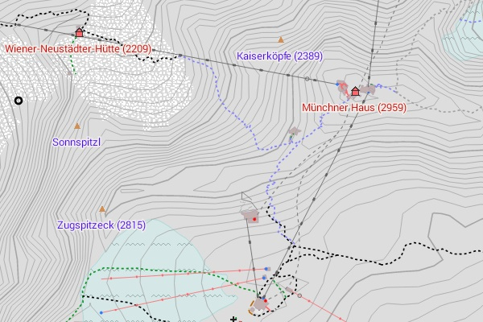

Support this map project:
Obolus for project support:
If the Freizeitkarte project does something good for you maybe you can think about supporting us a little.
Don't regard this a commercialization but rather as an invitation to "a cup of tea and cake".
Donation option by transfer to a German bank account:
Account holder: Klaus Tockloth
Bank: Volksbank Münster eG
BIC: GENODEM1MSC
IBAN: DE48401600501701199600
Donation option by transfer via PayPal:
Thanks for your support - you are helping us to continue the project.
On the Freizeitkarten project are active working:
- Klaus Tockloth (development)
- Christian Kraemer (server administration)
- Patrik Brunner (internationalization, support)
- Stephan Brugger (design fzk-outdoor-contrast)
The Android app "Theme-Configurator" was developed by:
- SammysHP (c:geo)
- Longri (CacheBox)
Hint for program/app developers:
All maps and themes are also listed in a repository file. This repo can be used to integrate downlads direct in the app.
Link: XML-Repository

The Zugspitze - Germany's highest peak.
Statement according to section 5 of the Telemediengesetz (TMG):
Klaus Tockloth, Im Seihof 34
D-48161 Münster, Germany
eMail: freizeitkarte@googlemail.com
Disclaimer / Notice of liability for links / Privacy protection policy / Copyright:
Due to German regulations this part of the imprint is very special and only available in german.
Link to the german imprint
The Rurtalsperre in the Eifel - a popular excursion and hiking destination.
Use of the maps:
The use of maps is at your own risk. The map data and / or the routing may contain errors or may be insufficient.
The creators of these maps are not liable for any damage resulting directly or indirectly from the use of the maps.
License conditions of the map data:
Map data © OpenStreetMap contributors (ODbL).
All maps are based on data from the OpenStreetMap project.
OpenStreetMap is a free editable map of the whole world that is created by people like you.
OpenStreetMap allows geographic data to look at collaborative way from anywhere in the world and edit it.
Link: http://www.openstreetmap.org/
License: http://www.openstreetmap.org/copyright/en
License conditions of the elevation data:
Contour data © U.S. Geological Survey (public domain).
The contour lines are partly based on data from the U.S. Geological Survey.
Link: http://dds.cr.usgs.gov/srtm/version2_1/SRTM3
License: http://eros.usgs.gov/#/About_Us/Customer_Service/Data_Citation
Contour data © J. de Ferranti (free for research and private use).
The contour lines are partly based on data from Jonathan de Ferranti.
Link: http://www.viewfinderpanoramas.org/dem3.html
License: http://www.viewfinderpanoramas.org/dem3/
License conditions of the maps:
Produced map © FZK project (free for research and private use).
The available maps are a derived work from map and elevation data.
The maps can be used free for personal or academic purposes.
Provision of OpenStreetMap data:
Daily updated country- and region-specific extracts of the OSM database data are provided by the company Geofabrik GmbH (Karlsruhe, Germany).
Link: http://www.geofabrik.de
Creation of the maps:
All maps were created using the tools "osmfilter, osmconvert" and "MapsForge MapWriter".
Link: http://wiki.openstreetmap.org/wiki/DE:Osmfilter
Link: http://wiki.openstreetmap.org/wiki/DE:Osmconvert
Link: http://code.google.com/p/mapsforge/
License: 100% free and open source (LGPL3 license)
Creation of the contour lines:
The contour lines were created using the tool "phyghtmap".
Link: http://katze.tfiu.de/projects/phyghtmap/
License: http://gnu.org/licenses/gpl.html
Trademarks:
Garmin® is a registered trademark and BaseCamp™ is a trademark of Garmin Ltd. (http://www.garmin.com) or its subsidiaries.
Mac OS® is a registered trademark of Apple Inc. (http://www.apple.com).
Windows® is a registered trademark of Microsoft Corp. (http://www.microsoft.com).
Picture credits:
The overview and relief maps are created with QGIS and are based on data from "Natural Earth" (http://www.naturalearthdata.com).
Android apps:
The apps "Locus Map Free" and "Locus Map Pro" are programms from von Asamm Software, s. r. o., Prag (http://www.locusmap.eu).
The apps "OruxMaps" and "OruxMaps Donate" are programms from Jose Vasquez, Madrid (http://www.oruxmaps.com).
Reference to further documents:
The description of the map elements in the legends are in accordance with the definitions:
http://wiki.openstreetmap.org/wiki/DE:Map_Features